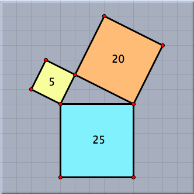

面積

 |
| ピタゴラスの定理(面積表示つき) |
要約
多角形や2次曲線を選択すると面積が得られる。注意
双曲線の面積は複素数で表示されます。多角形の面積を求める時、多角形が見かけ上幾つかに分かれる時があります。 その時の1つ1つの面積への寄与は、その「回転数」で決まります。 特に、多角形の頂点が時計回りに向き付けられていると、面積は負になります。 自分自身と交わるような形だと(たとえば8の字型)面積が0になることもありえます。
CindyScript では 面積 関数を用いて三角形の面積を計算することができます。
(阿原)
Page last modified on Wednesday 27 of July, 2011 [13:43:09 UTC].
The original document is available at
http://doc.cinderella.de/tiki-index.php?page=AreaJ